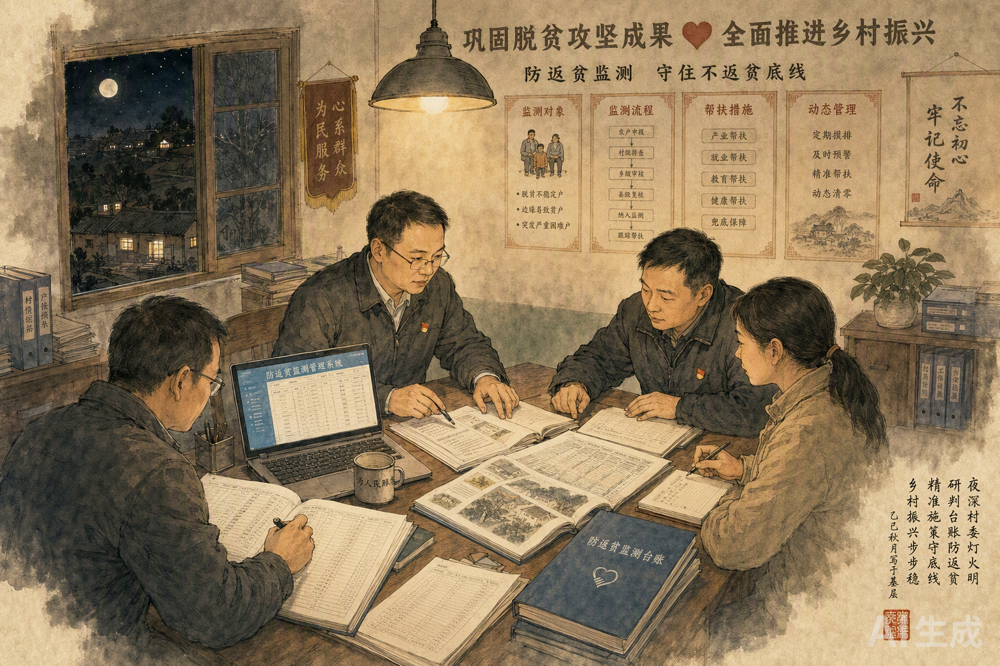
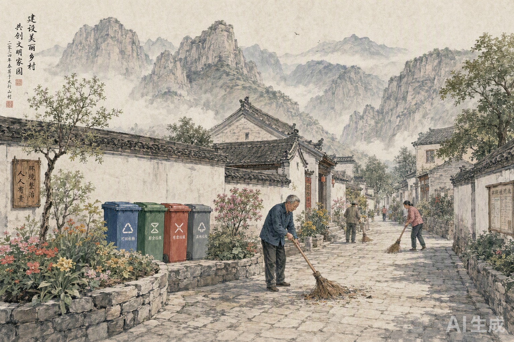
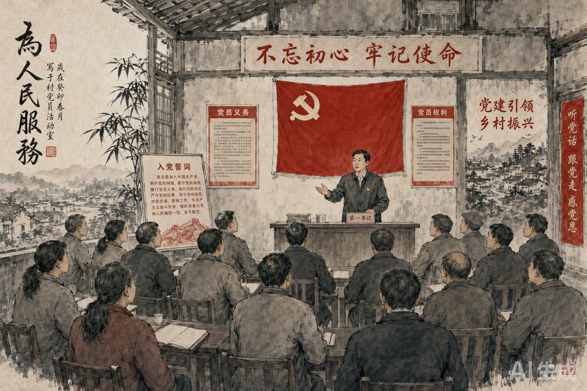
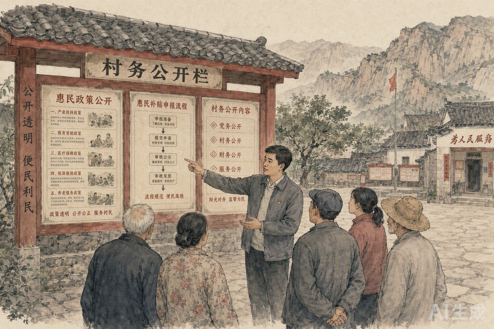
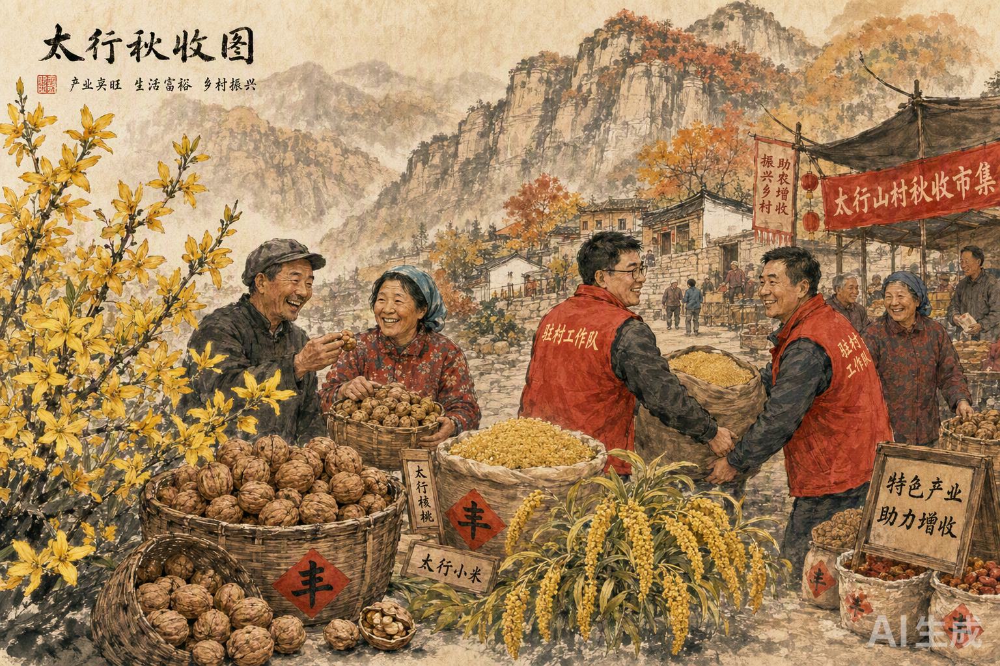

中共黎城县东阳关镇枣畔村支部委员会
枣畔村驻村工作队 · 2026年8月
太行山麓 · 东阳关畔 · 144 户乡亲的答卷
区位人口 · 资源禀赋 · 发展短板
八个阶段 · 从到岗履职到产业增收
代养牛 · 防返贫监测 · 一键报贫
收入增长 · 措施覆盖 · 指标对照
表彰荣誉 · 典型案例 · 档案沉淀
五项重点 · 行稳致远
2024.07
2024.07—08
2024.08起
2025.04起
2024.09起
2024.07起
2024.10起
2024.09起
八个阶段环环相扣：走访是基础、监测是底线、产业是核心、党建是保证





较2023年12160元增长32.7%
脱贫户收入持续稳定增长
2025年消费帮扶带动户均增收
| 指标 | 2024年 | 2026年 | 变化 |
|---|---|---|---|
| 村集体经济收入 | 8.2万元 | 15.6万元 | 增长90% |
| 脱贫户人均纯收入 | 12160元 | 16140元 | 增长32.7% |
| 村内巷道硬化 | 0米 | 1200米 | 出行条件改善 |
| 分类收集点 | 0组 | 40组 | 垃圾分类全覆盖 |
| 监测对象风险消除 | 0户 | 2户 | 动态清零推进 |
| 消费帮扶帮销 | 0万元 | 18.6万元 | 户均增收超1200元 |
| 产业奖补兑现 | 0万元 | 6.8万元 | 应奖尽奖 |
| 务工补贴兑现 | 0万元 | 4.2万元 | 应补尽补 |
东阳关镇党委 · 2025.06
黎城县 · 2025.12
黎城县 · 2025.10
受助监测户 · 2025.08
村民代表 · 2026.01
"第一书记的一天" · 2026.05
帮扶档案 40 项全部数字化归档 · 走访照片 / 项目文档 / 会议纪要 / 帮扶成果 / 荣誉表彰
脱贫户、监测户入股
户均预计分红
东组3号王大姐家，户主患慢性病，是村里第一批入股代养牛的农户。2025年8月，2头西门塔尔牛入栏。
从入栏那天起，王大姐养成了记"牛账本"的习惯：饲料多少斤、防疫几次、季度公开的存栏情况，一笔一笔都记着。
2026年6月，上半年收益核算公示，她家预计分得保底收益加分红4000余元。
村级核实办结
群众跑腿
2025年3月，东组9号刘大哥家突发变故：户主确诊重病，自付医疗支出压垮了四口之家。
网格员第一时间协助"一键报贫"申报，村级5个工作日完成入户核实，按程序纳入突发严重困难户监测。
临时救助、医疗救助、教育资助、代养牛入股逐一落地，2025年家庭收入不降反增。
连翘亩产提升
当年增收
北组6号郭大叔，过去种地凭老经验，连翘管护跟不上，产量上不去。
2025年，工作队帮他申报3亩连翘产业奖补，拉着他参加农技培训：剪枝、施肥、病虫害防治，一节不落。
当年亩产多两成，加上消费帮扶帮销，增收3000多元。
全力抓好2026年代养牛收益兑现与分红到户，项目红利落到群众手中
持续巩固防返贫监测成果，健全常态化排查预警机制
深化人居环境长效管护与垃圾分类试点，建设宜居宜业和美乡村
拓展消费帮扶与就业服务渠道，推动连翘、核桃、小米提质增效
加强村党组织建设与乡土人才培育，留下一支带不走的工作队
一张蓝图绘到底 · 一任接着一任干
驻村帮扶，驻的是村，帮的是民，扶的是志与智。
枣畔村驻村工作队 · 2026年8月